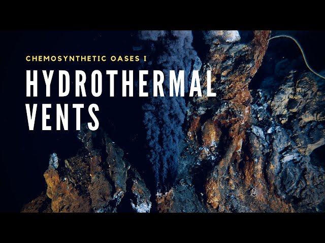

Chemosynthetic worlds are environments where life can potentially thrive without sunlight, using chemical energy instead of light energy. In these worlds, microorganisms called chemotrophs obtain energy by oxidizing inorganic compounds like hydrogen sulfide, methane, or iron.
Examples of chemosynthetic environments on Earth include:
Scientists believe that Europa, with its subsurface ocean and potential hydrothermal activity, could host similar chemosynthetic ecosystems.
Europa is of great interest in the search for extraterrestrial life due to its potential for hosting a habitable environment beneath its ice shell. The combination of water, energy, and organic compounds makes it a prime candidate for potential chemosynthetic life in our solar system.
Europa is one of Jupiter's four largest moons, known as the Galilean moons. It's slightly smaller than Earth's Moon and has a smooth, icy surface covering a potential subsurface ocean.